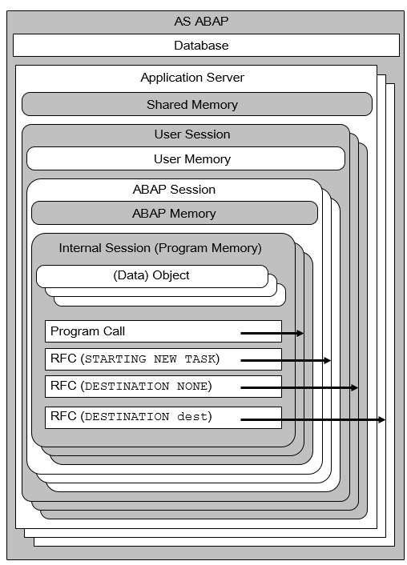

SAP NetWeaver AS ABAP Release 751, ©Copyright 2017 SAP AG. All rights reserved.
ABAP - Keyword Documentation → ABAP - Overview → ABAP Memory Organization - Overview →General Memory Organization
This section describes AS ABAP memory organization from the perspective of an ABAP program, meaning which memory can be accessed by an ABAP program. For a more general description with more technical details, see the SAP Memory Management of the
SAP NetWeaver documentation in SAP Help Portal.
The following figure shows the general memory organization of ABAP programs up to the level of the internal session:

Application Server
The application layer of an AS ABAP can be distributed across multiple application servers. If an AS ABAP has more than one application server, these are normally instanced on different computers. It is also possible, however, for multiple application servers of one or more AS ABAPs to be instanced on the same host computer. The transaction SM51 shows an overview of the application server of the current AS ABAP and which computers it is instanced on. The network name of the computer on which the current application server is instanced can be taken from the system field sy-host in an ABAP program.
Every application server has access to the central AS ABAP database. Each application server has its own shared memory. The ABAP runtime environment uses the shared memory for programs, program data, and buffers (for example, in SAP buffering). ABAP programs can store shared objects and data clusters in the shared memory.
Note
The shared memory is frequently used and may therefore become a sparse resource, which can result in bottlenecks when saving data explicitly from ABAP programs.
User Session
Logging on to an application server opens a user session. Logons take place using SAP GUI, the RFC interface, or ICF (including APC). A user session is assigned its own memory area of the user memory, in which SPA/GPA parameters can be stored. There are various types of user sessions and various rules apply when ABAP programs are executed:
From a user session, it is possible to open further user sessions on the same application server or another server in a program-driven way. For example:
The maximum number of user sessions is configured using the profile parameter rdisp/tm_max_no. The profile parameter rdisp/rfc_max_login determines which percentage of the sessions can be opened using the RFC interface.
ABAP Session
An ABAP session is opened for each user session. Each ABAP session is assigned its own memory area of ABAP memory, in which data clusters can be stored. The programs of a call sequence share access to these clusters and the data is retained for as long as the top level transaction of the call sequence.
Further ABAP sessions for a user session can be opened as followed:
A maximum of 16 ABAP sessions are possible per user session. The number of sessions actually possible for a system is determined by the profile parameter rdisp/max_alt_modes, whose default is 6.
Note
The ABAP memory can be used to pass data between the programs in a call sequence.
Internal Session
Each call of an ABAP program creates a new internal session, in which the called program is loaded.
An internal session contains a program memory, itself divided into the areas heap and stack. This is where the modifiable objects of the program are held. The non-modifiable program data is stored in the PXA. The program memory contains references to the necessary data in the PXA. Technically speaking, the program memory and the global PXA are stored in the shared memory of the application server where they are the responsibility of SAP Memory Management.
In one ABAP session, there can be a maximum of nine internal sessions, which always belong to a call sequence. Data from the ABAP memory is always assigned to a call sequence.
On 64-bit platforms, an internal session can theoretically require up to 4 TB of memory. On 32-bit platforms, the theoretical upper limit is 4 GB. The practical upper limit is usually below the theoretical limit, since the actual physically installed main memory is the maximum available and divided up among all consumers.
Note
Instances of classes, with the exception of shared objects, are located in the internal session. It is therefore not possible to store references to objects in the ABAP memory.